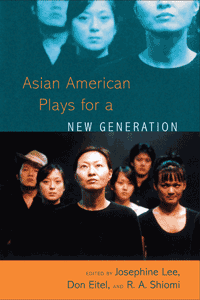

<body bgcolor="#FFFFFF" text="#000000" link="#0000FF" vlink="#CC0000" alink="#CC0000"><center><hr width="350" size="1" align="center" noshade>Asian American plays from the heartland<hr width="350" size="1" align="center" noshade><p><a href="https://cdcshoppingcart.uchicago.edu/Cart/ChicagoBook.aspx?ISBN=9781439905159&&PRESS=temple" target="_top">Buy this book!</a> | <a href="https://cdcshoppingcart.uchicago.edu/Cart/Cart.aspx?PRESS=temple" target="_top">View Cart</a> | <a href="https://cdcshoppingcart.uchicago.edu/Cart/Cart.aspx?PRESS=temple" target="_top">Check Out</a></p><p></p></center><!--none//--><h1>Asian American Plays for a New Generation</h1>
<h3>edited by Josephine Lee, Don Eitel and R. A. Shiomi</h3>
<P>cloth 1-4399-0515-0 $90.50, Jun 11, <FONT COLOR=#990033>Available</FONT>
<br>paper 1-4399-0516-9 $31.95, Jun 11, <FONT COLOR=#990033>Available</FONT>
<br>Electronic Book 1-4399-0517-7 $31.95 <FONT COLOR=#990033>Available</FONT>
<BR> 336 pp
6x9
7&nbsp;halftones
</P><BLOCKQUOTE><I>"The quality of the plays in </I>Asian American Plays for a New Generation<I> and the diversity of the themes—interracial desire, racial profiling, and grief—is particularly impressive. The plays engage sophisticated ideas about migration and home; imposture and authenticity; political allegory; fantasy and reality; and, of course, identity politics. Lee’s Introduction and Shiomi’s Afterword serve to frame the work, providing the necessary grounding to orient the reader to the origins—and significance—of this fine volume."</I><BR>&#151<B>Leslie Bow</B>, Professor of English and Asian American Studies at the University of Wisconsin, Madison<i></I></BLOCKQUOTE>
<p>Asian American plays provide an opportunity to think about how racial issues are engaged through theatrical performance physical contact, bodily labor, and fleshly desire as well as through the more standard elements of plot, setting, characterization, staging, music, and action.</p>
<p><em>Asian American Plays for a New Generation</em> showcases seven exciting new plays that dramatize timely themes that are familiar to Asian Americans. The works variously address immigration, racism, stereotyping, identity, generational tensions, assimilation, and upward mobility as well as post-9/11 paranoia, racial isolation, and adoptee experiences. </p>
<p>Each of these works engages directly and actively with Asian American themes through performance to provide an important starting point for building relationships, raising political awareness, and creating active communities that can foster a sense of connection or even rally individuals to collective action.</p>
<BR>&nbsp;<h2>Excerpt</h2><P>Excerpt available at <a href="http://www.temple.edu/tempress">www.temple.edu/tempress</a></p>
<BR>&nbsp;<h2>Reviews</h2>
<p><I>"</I>Asian American Plays for a New Generation<I> is a timely, varied, and provocative anthology that does a wonderful job of showcasing the increasing diversity and visibility of Asian American drama. The collection’s strengths are many, chief among them the uniform excellence of the dramatic works that have been chosen for inclusion. The skillful ways in which the complexities of Asian America are represented and complicated by the playwrights is impressive. By focusing on the diverse histories of Asian America—including the significance of transnational adoption and the more recent historical impact of events like 9/11—the collection also makes visible the ‘secret histories’ that rupture the coherence of an imagined and imaginary Asian America. The result is striking, a testament to the ongoing development of an Asian American literary tradition that draws on the power of genre to reassess the politics of representation." </I><br>&#151<b>Tina Chen</b>, Associate Professor of English and Asian American Studies at Pennsylvania State University
<BR>&nbsp;<P><p> <I><a href="http://bookdragon.si.edu/2011/07/27/asian-american-plays-for-a-new-generation-edited-by-josephine-lee-don-eitel-and-r-a-shiomi/" target="new">Smithsonian BookDragon</a></I> featured a July 27 blog entry about <I>Asian American Plays for a New Generation</I> edited by Josephine Lee, Don Eitel, and R.A. (Rick) Shiomi.</p></P><BR>&nbsp;<br>
<h2>Contents</h2><P>
Introduction &bull; <i>Josephine Lee</i><br>
1. Indian Cowboy &bull; <i>Zaraawar Mistry</i><br>
2. Walleye Kid: The Musical &bull; Music and Lyrics: <i>Kurt Miyashiro</i> &bull; Book: <i>R.A. Shiomi and Sundraya Kase</i><br>
3. Happy Valley &bull; <i>Aurorae Khoo</i><br>
4. Asiamnesia &bull; <i>Sun Mee Chomet</i><br>
5. Sia(b) &bull; <i>May Lee-Yang</i><br>
6. Bahala Na (Let It Go) &bull; <i>Clarence Coo</i><br>
8. Ching Chong Chinaman&bull; <i>Lauren Yee</i><br>
Afterword &bull; <i>R.A. Shiomi</i><br>
Contributors
</P><BR>&nbsp;<H2>About the Author(s)</H2>
<P><strong>Josephine Lee</strong> is Professor of English and Asian American Studies at the University of Minnesota-Twin Cities. She is currently the president of the Association for Asian American Studies. Her most recent book is <em>The Japan of Pure Invention: Gilbert and Sullivan's The Mikado</em>. She is also the author of <em>Performing Asian America: Race and Ethnicity on the Contemporary Stage</em> and co-editor of <em>Re/collecting Early Asian America: Essays in Cultural History.</em> (both Temple).</P>
<P><strong>Don Eitel</strong> is a musician, composer, actor, director, and arts administrator. Currently the Managing Director of Mu Performing Arts, he was also a founding Artistic Director of Starting Gate Productions and has worked as the Development Associate and Assistant to the Artistic Director at Park Square Theatre, a mid-sized company based in St. Paul, MN.</P>
<P><strong>R. A. Shiomi</strong> has been one of the leaders of the Asian American theater movement since the 1980's, as a playwright, director and artistic director. His plays include <em>Yellow Fever, Rosie's Cafe, Play Ball, Mask Dance and Journey of the Drum</em>. He has directed at Mu Performing Arts, AATC in San Francisco and Interact Theater in Philadelphia. He is one of the founders of Mu Performing Arts and has been its artistic director since 1993. He received the Sally Irvine Ordway award for "Vision" in 2007 for his work with Mu Performing Arts.</P>
<BR><H2>Subject Categories</H2>
<p><A HREF="/tempress/literature.html" TARGET="_top">Literature and Drama</a>
<BR><A HREF="/tempress/asian_amer.html" TARGET="_top">Asian American Studies</a>
<BR><A HREF="/tempress/american.html" TARGET="_top">American Studies</a>
</p>
<p align="center"><a href="https://cdcshoppingcart.uchicago.edu/Cart/ChicagoBook.aspx?ISBN=9781439905159&&PRESS=temple" target="_top">Buy this book!</a> | <a href="https://cdcshoppingcart.uchicago.edu/Cart/Cart.aspx?PRESS=temple" target="_top">View Cart</a> | <a href="https://cdcshoppingcart.uchicago.edu/Cart/Cart.aspx?PRESS=temple" target="_top">Check Out</a></p><p><font face="Arial" size="1"><a href="copyright.html" onMouseOver="window.status='Web Copyright Policy';return true;" onMouseOut="window.status=''" title="Web Copyright Policy">&copy;</a> 2015 <a href="http://www.temple.edu" target="new" onMouseOver="window.status='Link to Temple University home page';return true;" onMouseOut="window.status=''" title="Link to Temple University home page">Temple University</a>. All Rights Reserved. http://www.temple.edu/tempress/titles/2132_reg.html</font></p>